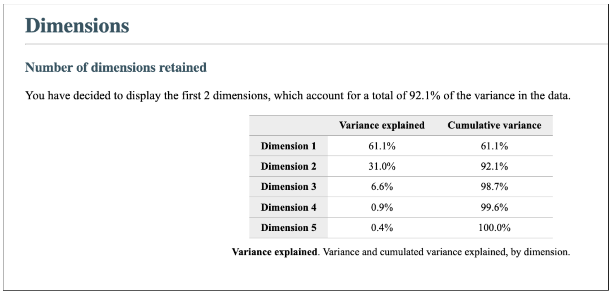
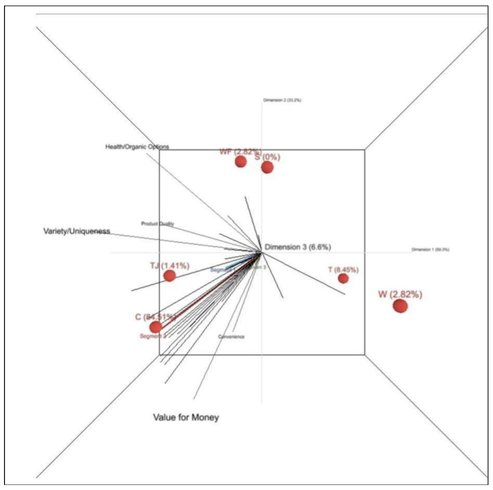
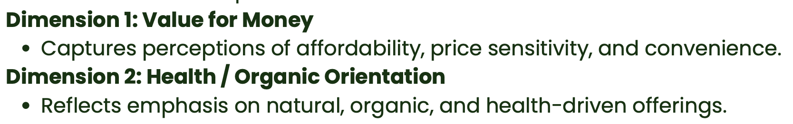
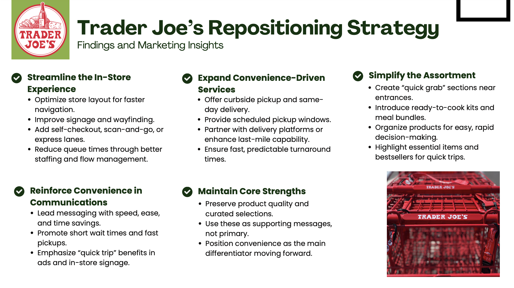

Using consumer research, segmentation, and perceptual mapping to understand how shoppers perceive Trader Joe's relative to key grocery competitors.
Graduate Marketing Analytics Project
MKTG 612 · 2025
How is Trader Joe's positioned in consumers' minds compared with key competitors, and what repositioning opportunities exist?
The research examined how consumers evaluate Trader Joe's, Whole Foods, Walmart, Target, Costco, and Sprouts across quality, value, health, variety, and convenience.
Consumer survey using Qualtrics
N = 71 U.S. grocery shoppers
Enginius
The project combined survey research with multivariate marketing analytics to move from consumer perceptions to segmentation, positioning, and strategic recommendations.
Respondents evaluated grocery retailers across product quality, value for money, health and organic options, variety and uniqueness, and convenience.
Multidimensional scaling was used to transform complex consumer evaluations into a perceptual map representing competitive similarities and differences.
Clustering identified distinct consumer groups based on the attributes they valued when choosing a grocery retailer.
The segments and perceptual positioning were combined to identify a potential growth opportunity for Trader Joe's.
The findings were translated into a repositioning strategy focused on convenience while preserving Trader Joe's existing strengths.
ANALYSIS 01
The MDS analysis retained two dimensions that together explained approximately 92.1% of the variance in consumer evaluations.

The first dimension reflects a tension between value and convenience versus quality, health, and uniqueness. The second dimension further separates health and premium quality orientation from value and convenience orientation.
ANALYSIS 02
The perceptual map illustrates how shoppers position Trader Joe's relative to Whole Foods, Walmart, Target, Costco, and Sprouts.

Trader Joe's occupies a hybrid middle position, associated with variety, uniqueness, and product quality while showing weaker associations with convenience than several large-format competitors.
ANALYSIS 03
The segmentation analysis identified three groups with distinct priorities and trade-offs in grocery shopping.

Health- and quality-focused shoppers seeking unique or organic assortments.
Price-sensitive shoppers focused on value and practical performance.
Shoppers who prioritize speed, accessibility, and ease of shopping.
The project identified the Convenience Seekers segment as the target for the proposed marketing strategy because its needs could potentially be addressed through operational and service improvements without fundamentally changing Trader Joe's product identity.
The analysis found that Trader Joe's existing strengths in quality, uniqueness, and variety could be preserved while addressing a relative weakness in convenience.
STRATEGIC RECOMMENDATION
The proposed strategy focuses on making the shopping experience faster and easier while preserving the qualities customers already associate with Trader Joe's.

Improve store navigation, signage, checkout speed, and queue management.
Explore pickup, delivery, and more predictable shopping experiences.
Create quick-grab sections, meal bundles, and intuitive product groupings.
Make speed, ease, and time savings more visible in marketing communications.
Trader Joe's is strongly associated with quality, uniqueness, and variety, but less strongly with convenience.
Convenience Seekers represent a consumer group whose needs align with operational improvements.
Improve convenience while maintaining the core qualities that differentiate the brand.
Explore the original presentation and final report for the complete research methodology, analysis, questionnaire, and recommendations.